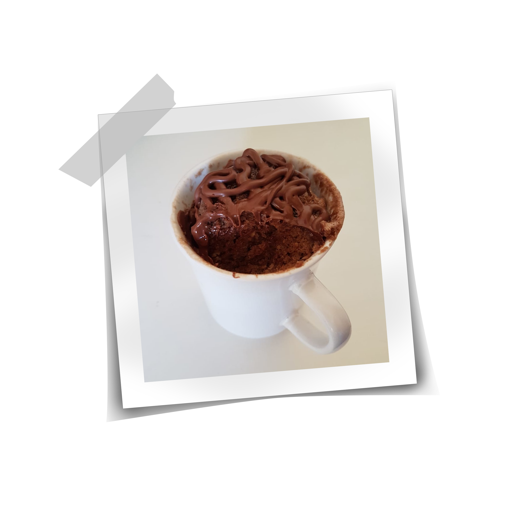
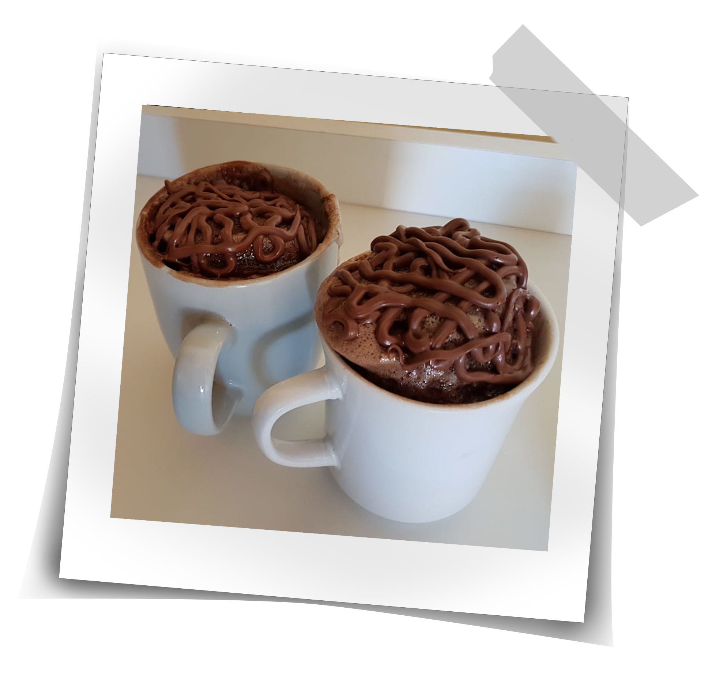

Nosso Livro de Receitas
Aqui você vai encontrar todas as nossas receitas preferidas!
(Em construção)

Bolo de Caneca


Ingredientes:
- 1 ovo;
- 4 colheres de sopa de leite;
- 3 colheres de sopa de óleo;
- 2 colheres de sopa rasas de achocolatado;
- 4 colheres de sopa rasas de açúcar;
- 4 colheres de sopa rasas de farinha de trigo;
- 1 colher de café rasa de fermento em pó.
Modo de Preparo:
- Coloque o ovo na caneca e bata bem com um garfo;
- Acrescente o óleo, o açúcar, o leite, o chocolate e bata mais;
- Acrescente a farinha e o fermento e mexa delicadamente até incorpar;
- Leve por 3 minutos no microondas na potência máxima;
- Adicione a cobertura de sua preferência e bom apetite!
<- Voltar